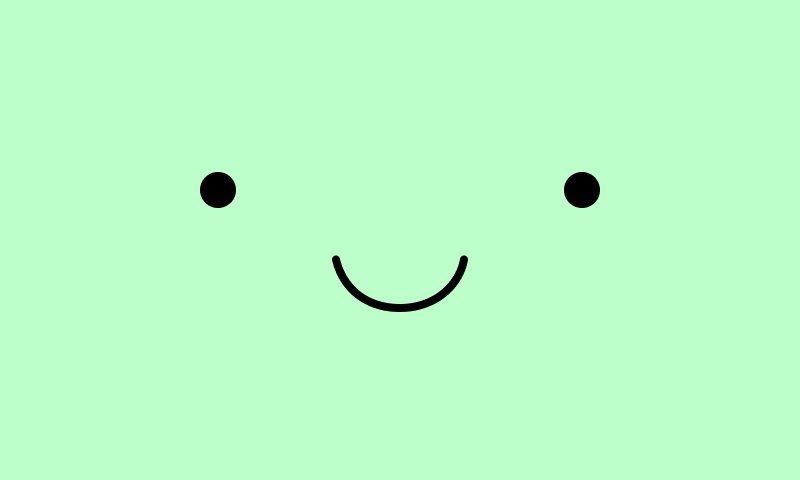

Flagship · Raspberry Pi 5

Liza — AI Voice Tutor Robot
Local-first, multimodal tutor on a 5-inch touchscreen
A voice tutor for children with animated faces (idle, listening, thinking, speaking), a push-button wake-up and a "dual brain" that switches between local Ollama, Groq and a cloud backend.
- Tutor, Co-tell and Re-tell modes — in Re-tell she listens to the child explain, then scores it out of 10 with strong points, gaps and what to revise.
- RAG over the child's own CBSE / ICSE textbooks, web-search fallback and a fact-check model to filter hallucinations.
- Camera vision: hold up an object or a book page and she names it, reads it or checks the answer.
- Includes a 3D education engine: 43 validated tools, 29 physics simulations, real anatomy and PubChem molecules in PyVista.
PythonRAGOllamaGroqFaster-WhisperObject detectionPygamePySide6